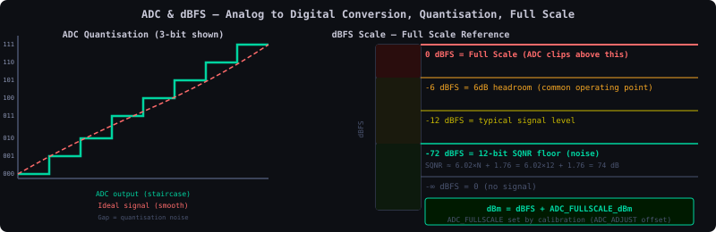
| ADC | Band | ADC RMS at sensitivity point (dBFS) | 2 dB error margin (dBm) |
|---|---|---|---|
| 0 | B1 | −44.9 | −95.5 |
| 2 | B3 | −43.3 | −93.5 |
| Band | Max output (dBm) | Sensitivity (dBm) | Power monitor DL (dBFS) |
|---|---|---|---|
| B1 | −16.7 | −69 | −16.7 dBFS, −8.8 dBFS [dpd_i] |
| B3 | −15.7 | −69 | same as above |
| B41 (TDD) | −23 | — | −16.7 dBFS, −8.8 dBFS [dpd_i] |
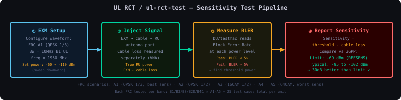
ul-rct-test --band B1 --bw 10M --frc A1 --iterations 100 --dsafile tc_cadence.json| Stage | What it does | Resource |
|---|---|---|
| 1. IQ Record | Captures raw IQ from FPGA channel-filter tap into tmpfs | ~2.5 MB/frame at 61.44 Msps |
| 2. Downsample | Converts FHGW rate down to PHY decoder input rate (lte_downsample) | ~24% of processing time |
| 3. PHY Decode | O-RAN 7.2x low-PHY: FFT, channel estimation, demap, decode, CRC (test_ulsim) | ~49% of time |
| 4. Results | BLER, SNR, RSSI to shell and log files | — |
| FRC / BW | DU (dBm) | RU embedded (dBm) | Delta |
|---|---|---|---|
| A1-3 QPSK, 5–20 MHz | −111.9 | −112.1 | 0.20 dB |
| A5 64QAM, 5 MHz | −92.80 | −92.85 | 0.05 dB |
| A5 64QAM, 10 MHz | −89.30 | −89.85 | 0.55 dB |
| A5 64QAM, 20 MHz | −83.6 | −84.85 | 1.25 dB (review) |
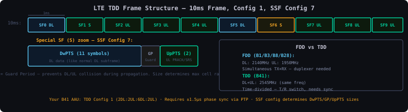
| Config | DwPTS symbols | GP symbols | UpPTS symbols |
|---|---|---|---|
| SSF config 7 | 10 | 2 | 2 |
| SSF config 8 | 11 | 1 | 2 |
| Signal | FDD position | TDD position |
|---|---|---|
| PSS | Last symbol of slots 0, 10 | 3rd symbol of special subframes (sf 1, 6) |
| SSS | 2nd-last symbol of slots 0, 10 | Last symbol of slot 1 (sf 0) and slot 11 (sf 5) |
| PDCCH | Up to 3 OFDM symbols | ≤2 symbols in sf 1 and 6 |
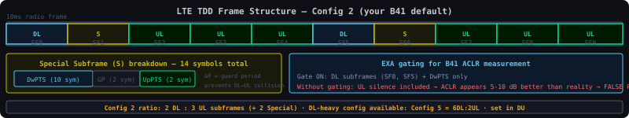
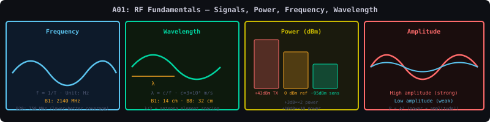
| Band | Frequency | Wavelength (λ) | Use case |
|---|---|---|---|
| B28 | 700 MHz | 42.9 cm | Rural coverage — penetrates buildings, long range |
| B8 | 900 MHz | 33.3 cm | Wide area coverage, voice fallback |
| B3 | 1800 MHz | 16.7 cm | Urban capacity + coverage balance |
| B1 | 2100 MHz | 14.3 cm | UMTS/LTE urban capacity |
| B41 | 2500 MHz | 12.0 cm | TDD, high capacity in dense areas |
| Power ratio | dB value | Memory trick |
|---|---|---|
| 2× | +3 dB | "Double = 3 dB" |
| 10× | +10 dB | "10× = 10 dB" |
| 100× | +20 dB | 10 dB + 10 dB |
| 1000× | +30 dB | 1 W when P₁ = 1 mW |
| 0.5× | −3 dB | "Half power = −3 dB" |
| 0.1× | −10 dB | One tenth |
| dBm | Actual power | Context |
|---|---|---|
| +43 dBm | 20 W | Typical macro base station TX (per port) |
| +30 dBm | 1 W | Small cell TX |
| +23 dBm | 200 mW | Mobile phone max TX |
| 0 dBm | 1 mW | VNA source output level |
| −10 dBm | 100 µW | Typical signal into EXA |
| −69 dBm | 126 pW | 3GPP LTE REFSENS limit (Wide Area BS) |
| −107 dBm | 0.2 fW | Thermal noise in 10 MHz BW at 290 K |
| Channel BW | Noise power | Calculation |
|---|---|---|
| 1 MHz | −114 dBm | −174 + 60 (10·log10(10⁶)) |
| 10 MHz | −104 dBm | −174 + 70 |
| 20 MHz | −101 dBm | −174 + 73 |
| 100 MHz (NR) | −94 dBm | −174 + 80 |
| BW | Noise Power | At NF=5.75dB | Sensitivity floor (QPSK) |
|---|---|---|---|
| 1 Hz | -174 dBm | — N/A | — N/A |
| 1 kHz | -144 dBm | -138.25 dBm | — N/A |
| 180 kHz (1 RB) | -126.4 dBm | -120.65 dBm | — N/A |
| 1.4 MHz | -115.5 dBm | -109.75 dBm | -102.75 dBm |
| 5 MHz | -107 dBm | -101.25 dBm | -94.25 dBm |
| 10 MHz | -104 dBm | -98.25 dBm | -91.25 dBm |
| 20 MHz | -101 dBm | -95.25 dBm | -88.25 dBm |
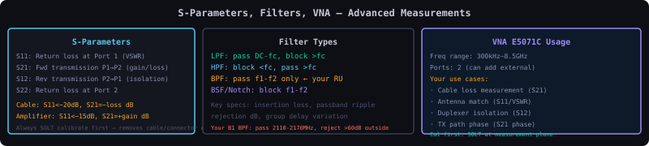
| Parameter | Meaning | What you measure | Good value |
|---|---|---|---|
| S11 | Input reflection (Port 1) | Return loss / input match | < −10 dB (VSWR < 2:1) |
| S21 | Forward transmission (Port 1→2) | Insertion loss / gain | Near 0 dB for cable; depends on filter |
| S12 | Reverse transmission (Port 2→1) | Reverse isolation | = S21 for passive, <−40 dB for amplifier |
| S22 | Output reflection (Port 2) | Output match | < −10 dB |
| Filter type | Passband | Rolloff | Best for |
|---|---|---|---|
| Butterworth | Maximally flat (no ripple) | Gentle (−20 dB/decade per pole) | Wideband systems where flatness matters |
| Chebyshev | Equiripple (your E5071C trace!) | Steeper than Butterworth | Most bandpass/duplexer filters in cellular |
| Elliptic (Cauer) | Equiripple in pass AND stop | Steepest possible for given order | Duplexers needing extreme TX/RX isolation |
| Bessel | Flat, linear phase | Gentle | Pulse/wideband signals where group delay flatness matters |
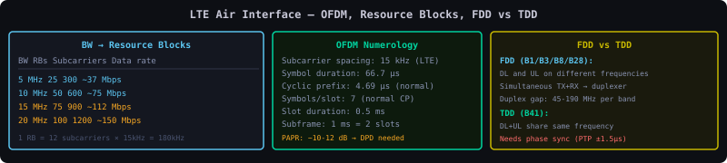
| Channel BW | Number of RBs | Subcarriers (used) |
|---|---|---|
| 1.4 MHz | 6 | 72 |
| 5 MHz | 25 | 300 |
| 10 MHz | 50 | 600 |
| 15 MHz | 75 | 900 |
| 20 MHz | 100 | 1200 |
| Band | UL frequency (base station RX) | DL frequency (base station TX) | Duplex gap |
|---|---|---|---|
| B1 | 1920–1980 MHz | 2110–2170 MHz | 130 MHz |
| B3 | 1710–1785 MHz | 1805–1880 MHz | 95 MHz |
| B8 | 880–915 MHz | 925–960 MHz | 45 MHz |
| B28 | 703–748 MHz | 758–803 MHz | 55 MHz |
| Format | Content | Bits | Modulation | Your waveforms |
|---|---|---|---|---|
| Format 1 | Scheduling Request (SR) only | 0 bits (on/off keying) | OOK | PUCCH_format_1_*MHz_rnti_0.wfm |
| Format 1a | 1-bit ACK/NACK | 1 | BPSK | PUCCH_format_1a_*MHz_rnti_0.wfm |
| Format 1b | 2-bit ACK/NACK | 2 | QPSK | PUCCH_format_1b_*MHz_rnti_0.wfm |
| Format 1b_cs | ACK/NACK + channel selection | 2 | QPSK | PUCCH_format_1bcs_*MHz.wfm |
| Format 1a_SR | SR + ACK/NACK combined | 1+SR | BPSK+OOK | PUCCH_format_1a_SR_delta_*_10MHz.wfm |
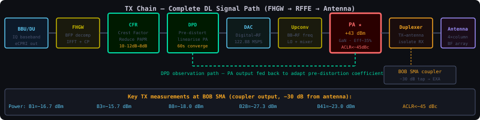
The TX chain converts baseband IQ data from the BBU into a high-power RF signal at the antenna. Every stage serves a specific purpose. Understanding each block explains every TX test you run — power, ACLR, EVM, DPD convergence.
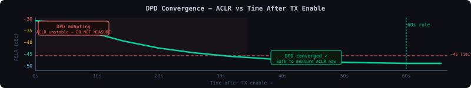
A hearing aid takes distorted sound (the PA's nonlinear output) and pre-processes the input so the output sounds correct. When you first put it in, the aid doesn't know your specific ear — it takes a minute to adapt its settings to match your hearing profile. DPD is the same: when TX first enables, it doesn't know the PA's exact nonlinearity today (which varies with temperature, ageing, power level). The ORX path samples the PA output and the DPD engine runs an adaptive algorithm, updating its coefficients every few milliseconds until the error is below 1%. Measuring ACLR before this converges is like measuring eye prescription before the patient has focused — the number is meaningless.
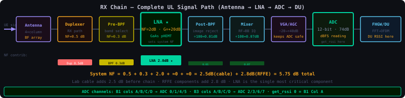
The RX chain converts a weak RF signal from the UE antenna into a digital baseband stream that the DU can process. Every component in the chain adds noise (increasing NF) or adds gain (amplifying both signal and noise). The art of RX chain design is minimising noise before the first amplifier.
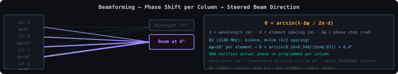
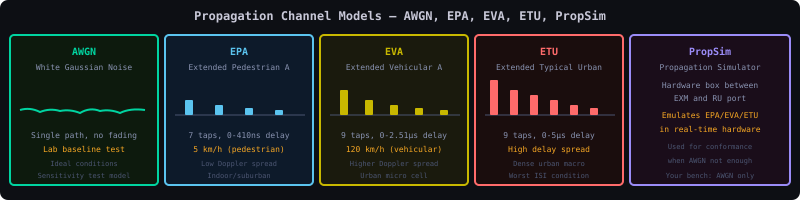
| Profile | Taps | RMS delay spread | Doppler (typical) | Models | In your config |
|---|---|---|---|---|---|
| EPA5 | 7 | 43 ns | 4.6 Hz (5 km/h) | Indoor/pedestrian | PUCCH format 1/1a/1b all BWs |
| EVA5 | 9 | 357 ns | 4.6 Hz (5 km/h) | Suburban low speed | PUCCH format 1a/1b at 5 MHz |
| EVA70 | 9 | 357 ns | 64.7 Hz (70 km/h) | Suburban vehicular | PUCCH format 1/1a/1b all BWs |
| ETU300 | 9 | 991 ns | 277.6 Hz (300 km/h) | High-speed train urban | PUCCH format 1a/1b — harder formats only |
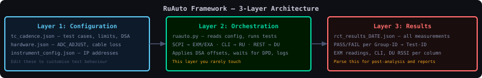
:FREQ:CENT 2.14e9 sets EXA centre frequency to 2140 MHz. :FETCH:ACLR? returns the ACLR measurement result. RuAuto sends these automatically per tc_cadence.json instructions.
| Cadence | When | Duration target | Coverage goal | Gate for? |
|---|---|---|---|---|
| P0 CI | Every commit | < 10 min | Basic go/no-go per band | Merge approval |
| P1 Nightly | Every night | 1–3 hours | Wider per-band coverage, all freq points | Release readiness |
| P2 Regression | Weekly or on-demand | 8–12 hours | All BWs, all freq points | Feature release |
| P3 Sanity | After firmware change | 30–60 min | Single BW per band, fm only | Manual QA sign-off |
| P5 RSSI Acc | Periodic | 30 min | Band-edge RSSI accuracy | Calibration validation |
| ETM | RB allocation | Modulation | RS boosting | Primary use |
|---|---|---|---|---|
| 1.1 | Full (all RBs) | 64QAM on PDSCH | Yes (+6 dB CRS) | ACLR, output power, EVM — maximum spectral stress |
| 1.2 | Full | 64QAM | No | Spectrum emission mask — uniform power distribution |
| 2a | Partial (spread) | QPSK | No | Dynamic range — partial load stress |
| 2.0 | Full, periodic gaps | QPSK | No | Dynamic range with on/off patterns |
| 3.1 | Full multiport | 64QAM | Yes | Multi-antenna EVM, time alignment |
| 3.1a | Full multiport | 64QAM | Yes | OTA tests — reference signal needed for beamforming coherence measurement |
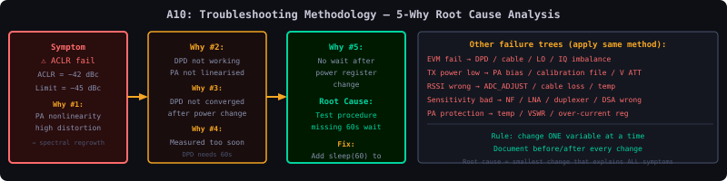
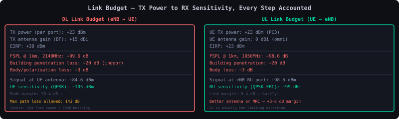
| Term | What it is | Sign | Your lab example |
|---|---|---|---|
| P_tx | Transmitter output power | + | RU TX = +43 dBm |
| G_tx | TX antenna gain | + | Conducted test: 0 dBi (cable, no antenna) |
| L_cable_tx | TX-side cable loss | − | SMA cable 1m at 2 GHz ≈ 0.5 dB |
| L_path | Free-space path loss OR attenuator | − | External 30 dB attenuator = 30 dB |
| G_rx | RX antenna gain | + | Conducted test: 0 dBi |
| L_cable_rx | RX-side cable loss | − | Cable from attenuator to EXA: 0.3 dB |
| L_connector | Connector losses | − | 4 SMA connectors × 0.1 dB = 0.4 dB |
| P_rx | Received power at EXA input | = | 43 − 30 − 0.5 − 0.3 − 0.4 = +11.8 dBm |
| Distance | 700 MHz (B28) | 1800 MHz (B3) | 2500 MHz (B41) |
|---|---|---|---|
| 1 m | 37.4 dB | 45.6 dB | 48.4 dB |
| 10 m | 57.4 dB | 65.6 dB | 68.4 dB |
| 100 m | 77.4 dB | 85.6 dB | 88.4 dB |
| 1 km | 97.4 dB | 105.6 dB | 108.4 dB |
| 5 km | 111.4 dB | 119.6 dB | 122.4 dB |
| Parameter | Value | Source |
|---|---|---|
| gNB TX power (per port) | +43 dBm | RU spec / test_Tx_BS_Output_Power |
| gNB antenna gain (massive MIMO) | +21 dBi | Antenna spec (64T64R) |
| Cable + connector loss (gNB) | −0.5 dB | Measured with VNA |
| EIRP | +63.5 dBm | 43 + 21 − 0.5 |
| Free space path loss (B3, 1 km) | −105.6 dB | FSPL formula |
| Shadow fading margin | −8 dB | Statistical, 90% coverage probability |
| Building penetration loss | −20 dB | Typical urban mid-rise (B3) |
| UE antenna gain | +0 dBi | Omnidirectional UE |
| Received power at UE | −70.1 dBm | 63.5 − 105.6 − 8 − 20 + 0 |
| UE noise floor (10 MHz, NF=7 dB) | −97 dBm | −104 + 7 |
| Required SNR (PDSCH 64QAM) | +18 dB | 3GPP link-level |
| UE sensitivity (64QAM) | −79 dBm | −97 + 18 |
| Link margin | +8.9 dB | −70.1 − (−79) |
| Component | Loss (dB) | How to measure it |
|---|---|---|
| SMA cable, PropSim → switch (2m) | 1.0 | E5071C S21, Port1→Port2 |
| RF switch insertion loss | 0.5 | E5071C S21 through switch |
| SMA cable, switch → splitter (1m) | 0.5 | E5071C S21 |
| Power splitter insertion loss | 3.0 | 3 dB by design + 0.2 dB excess loss |
| SMA cable, splitter → RU (3m) | 1.5 | E5071C S21 |
| Attenuator (deliberate) | 30.0 | Labelled value, verify with VNA |
| SMA connectors (8 total × 0.1 dB) | 0.8 | VNA calibration removes this if cal at DUT |
| Adapter losses | 0.2 | VNA measurement |
| Total path loss | 37.5 dB | Verify by measuring full path S21 with VNA |
| Offset from carrier | Typical TCXO | Typical PLL | EXA measurement |
|---|---|---|---|
| 1 kHz | -90 dBc/Hz | -70 dBc/Hz | Phase Noise measurement mode |
| 10 kHz | -110 dBc/Hz | -95 dBc/Hz | Marker noise function |
| 100 kHz | -130 dBc/Hz | -120 dBc/Hz | Log scale, 1kHz RBW |
| 1 MHz | -150 dBc/Hz | -145 dBc/Hz | Noise floor limited |
| 10 MHz | -160 dBc/Hz | -155 dBc/Hz | Requires low-noise ref |
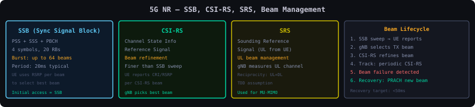
| Signal | Direction | Purpose | Test relevance |
|---|---|---|---|
| SSB (Synchronization Signal Block) | DL | Cell discovery, initial beam sweep, timing sync | gNB broadcasts SSBs in multiple beam directions; UE picks strongest |
| CSI-RS (Channel State Info RS) | DL | Channel measurement for precoder selection, beam refinement, RRM | gNB sends from each beam; UE reports RSRP per beam → gNB selects best |
| DMRS (Demodulation RS) | DL+UL | Channel estimation for data demodulation | Must be present for EVM measurement — the EXM/EXA uses DMRS to estimate channel and compute EVM |
| PT-RS (Phase Tracking RS) | DL+UL | CPE correction from phase noise | Only configured at high frequencies where phase noise is critical |
| SRS (Sounding RS) | UL | gNB estimates UL channel → used for TDD DL beamforming (reciprocity) | In TDD B41: gNB uses SRS measurements to set DL beam weights — channel reciprocity |
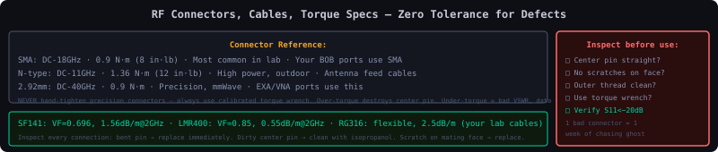
| Connector | Frequency range | Impedance | Where you see it | Key characteristic |
|---|---|---|---|---|
| SMA (SubMiniature A) | DC–18 GHz | 50 Ω | Test cables, VNA ports, EXA input, attenuators | Most common lab connector. Torque to 0.9 N·m (8 in-lb). Never overtighten — strips threads. |
| N-type | DC–11 GHz | 50 Ω | Power meters, high-power connections, outdoor equipment | Larger, robust, weatherproof. Torque to 1.4 N·m (12 in-lb). Better for high-power connections. |
| 3.5 mm | DC–26.5 GHz | 50 Ω | VNA cal kits, precision measurements | Mechanically compatible with SMA but wider bandwidth. Your E5071C (8.5 GHz) uses SMA but higher-freq VNAs use 3.5 mm. |
| 2.92 mm (K) | DC–40 GHz | 50 Ω | mmWave test cables | For 5G FR2 mmWave. Mates with 3.5 mm and SMA but fragile — never force. |
| BNC | DC–4 GHz | 50 Ω or 75 Ω | Trigger signals, 10 MHz reference, GPIB | Bayonet lock — quarter-turn. Good for frequent connect/disconnect. Not for precision RF. |
| SMP / SMPM | DC–65 GHz | 50 Ω | Internal RU connections, small form factor | Push-on (no thread). Used on PCB-to-PCB connections inside your RU. Fragile. |
| Cable type | Outer diameter | Loss at 1 GHz | Loss at 3 GHz | Best use |
|---|---|---|---|---|
| RG316 (thin, flexible) | 2.5 mm | 0.55 dB/m | 1.0 dB/m | Short internal jumpers. Never for precision measurements >1 GHz. |
| RG58 | 5 mm | 0.33 dB/m | 0.65 dB/m | Short bench connections. Avoid for critical measurement paths. |
| Semi-rigid (0.141") | 3.6 mm | 0.18 dB/m | 0.35 dB/m | Instrument-to-DUT, stable — doesn't flex but doesn't move either. |
| Phase-stable test cable (e.g. Gore, Huber+Suhner) | 6–10 mm | 0.15 dB/m | 0.28 dB/m | VNA measurements, any precision measurement where phase stability matters. |
| LMR-400 (outdoor feeder) | 10.3 mm | 0.07 dB/m | 0.14 dB/m | Long antenna feeder runs. Not for lab bench use. |
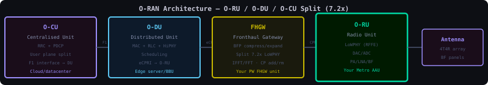
| Component | What it does | Interface | Parallel Wireless context |
|---|---|---|---|
| O-RU (Open Radio Unit) | RF front end — PA, LNA, ADC, DAC, antennas | Open Fronthaul (7.2x split) | Your Metro AAU — this is what you test |
| O-DU (Open Distributed Unit) | Low-PHY: iFFT/FFT, OFDM, PRACH detection, L1 processing | F1 interface to O-CU | Parallel Wireless DU software |
| O-CU (Open Central Unit) | RRC, PDCP, SDAP — high layer protocols | E1/F1 interfaces | Cloud-native, runs on COTS hardware |
| RIC (RAN Intelligent Controller) | Near-RT and non-RT control for optimization | A1/E2 interfaces | AI/ML-driven optimization of beamforming, scheduling |
From David Bekker's whiteboard (July 1 call) · LNA · VGA · Mixer · ADC · FFT · RSSI · dBFS · sensitivity point · your EXM screenshot decoded
type 0x00 IQ data (U-plane)
type 0x02 real-time control (C-plane: scheduling, beamforming)
type 0x05 one-way delay (S-plane timing)Flows are keyed by the eAxC ID (DU_Port + BandSector + CC + RU_Port). Four planes: Control / User / Sync (PTP) / Management — your Metro AAU is the O-RU in this model.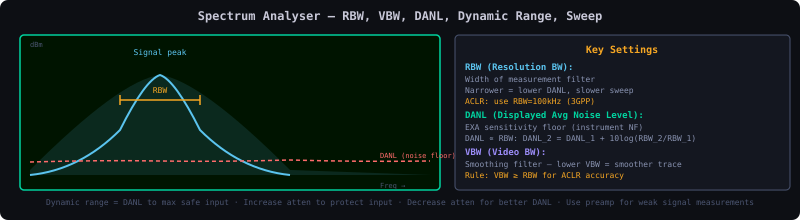
| Filter type | Passband | Rolloff | Phase | Where used in your RU |
|---|---|---|---|---|
| Butterworth | Maximally flat (no ripple) | Moderate (−20 dB/decade per pole) | Good | IF filtering where flat passband matters |
| Chebyshev Type I | Equiripple passband | Steeper than Butterworth | Moderate | Most bandpass/duplexer filters — your E5071C S21 screen shows this |
| Elliptic (Cauer) | Equiripple in pass AND stop | Steepest possible for given order | Poor | Duplexers needing extreme TX→RX isolation |
| SAW/BAW | Very sharp, compact | Excellent | Moderate | B1/B3/B8 bandpass filters on your RFFE board (BFCN-xxxx parts) |
| Bessel | Flat | Gentle | Linear (excellent) | Pulse/wideband where group delay flatness matters |
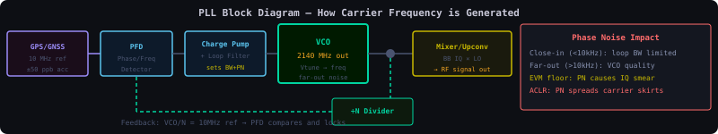
You set the target speed (the reference frequency). The cruise control continuously compares actual speed (VCO output ÷N) to target speed (10 MHz GPS reference). If too fast → eases off throttle (reduces Vtune). If too slow → adds throttle (increases Vtune). The loop filter determines how aggressively it reacts — too aggressive = oscillation, too slow = drifts. A GPS-locked PLL maintains frequency to within ±50 ppb — a 2140 MHz carrier drifts by less than 107 Hz. This is why GPS loss immediately impacts B41 TDD performance.
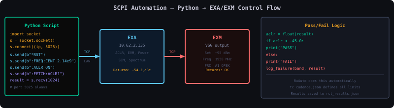
import socket, time
s = socket.socket()
s.connect(("10.62.2.135", 5025)) # EXA
s.send(b"*RST\n"); time.sleep(2)
s.send(b":FREQ:CENT 2.14e9\n")
s.send(b":FREQ:SPAN 50e6\n")
s.send(b":POW:ATT 20\n")
s.send(b":ACLR:STAN:PRES LTE\n")
s.send(b":INIT:CONT OFF\n")
s.send(b":INIT\n"); time.sleep(3)
s.send(b":FETCH:ACLR?\n")
result = s.recv(4096).decode()
print(result) # returns ACLR values in dBc
:FREQ:CENT {f}\n:POW:ATT {n}\n:POW:GAIN:STAT ON\n:FETCH:ACLR?\n:CONF:EVM; :INIT; :FETCH:EVM?\n:FREQ:CENT {f}\n:POW:AMPL {p}\n:OUTP ON\n:SOUR:RAD:ARB:WAV "FRC_A1_10M"\n
import socket, time, json
from datetime import datetime
# ── Instrument class ──────────────────────────────────────
class Instrument:
def __init__(self, ip, port=5025, timeout=10):
self.s = socket.socket()
self.s.settimeout(timeout)
self.s.connect((ip, port))
def send(self, cmd):
self.s.send((cmd + "\n").encode())
def query(self, cmd):
self.send(cmd)
return self.s.recv(4096).decode().strip()
def wait(self):
self.query("*OPC?") # wait for operation complete
# ── Connect instruments ───────────────────────────────────
exa = Instrument("10.62.2.135") # your EXA IP
print("EXA:", exa.query("*IDN?"))
# ── Setup EXA for LTE ACLR ───────────────────────────────
def setup_aclr(freq_mhz, bw_mhz=10):
exa.send("*RST"); time.sleep(2)
exa.send(f":FREQ:CENT {freq_mhz}e6")
exa.send(":CONF:ACLR") # select ACLR measurement
exa.send(":ACLR:STAN:PRES LTE") # LTE preset (correct RRC filter)
exa.send(f":ACLR:BWID {bw_mhz}e6") # channel BW
exa.send(":POW:ATT 20") # 20 dB atten
exa.send(":POW:GAIN:STAT OFF") # preamp OFF
exa.send(":AVER:COUN 10") # 10 averages
exa.send(":AVER:STAT ON")
exa.send(":INIT:CONT OFF")
exa.wait()
# ── Run ACLR per band ─────────────────────────────────────
bands = {
"B1": {"dl_mhz": 2140, "bw": 10},
"B3": {"dl_mhz": 1842.5, "bw": 10},
"B8": {"dl_mhz": 942.5, "bw": 10},
"B28":{"dl_mhz": 758, "bw": 10},
}
results = []
for band, cfg in bands.items():
print(f"\nMeasuring {band} at {cfg['dl_mhz']} MHz...")
setup_aclr(cfg['dl_mhz'], cfg['bw'])
print(f" Waiting 60s for DPD convergence...")
time.sleep(60)
exa.send(":INIT")
exa.wait()
time.sleep(3)
raw = exa.query(":FETCH:ACLR?")
vals = [float(v) for v in raw.split(",")]
ch_pwr = vals[0] # channel power dBm
aclr_adj_low = vals[1] # lower adjacent dBc
aclr_adj_high = vals[2] # upper adjacent dBc
passed = aclr_adj_low < -45 and aclr_adj_high < -45
results.append({
"band": band, "freq_mhz": cfg['dl_mhz'],
"ch_power_dBm": ch_pwr,
"aclr_adj_low_dBc": aclr_adj_low,
"aclr_adj_high_dBc": aclr_adj_high,
"pass": passed
})
print(f" Power: {ch_pwr:.1f} dBm | ACLR: {aclr_adj_low:.1f}/{aclr_adj_high:.1f} dBc | {'PASS' if passed else 'FAIL'}")
# ── Save results ──────────────────────────────────────────
filename = f"aclr_results_{datetime.now().strftime('%Y%m%d_%H%M')}.json"
with open(filename, 'w') as f:
json.dump(results, f, indent=2)
print(f"\nResults saved to {filename}")
fails = [r for r in results if not r['pass']]
if fails:
print(f"FAILED bands: {[r['band'] for r in fails]}")
else:
print("All bands PASSED ACLR")
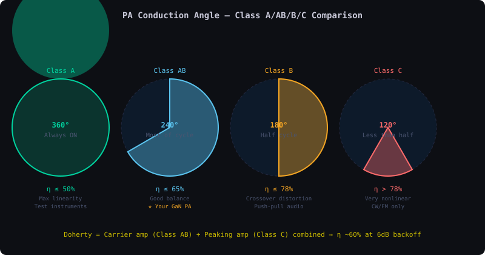
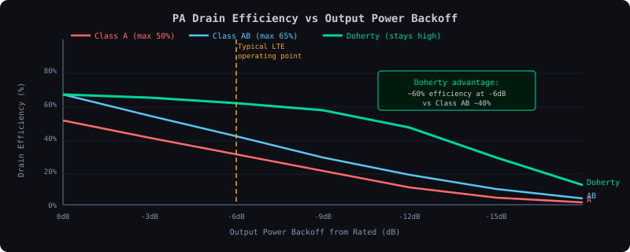
| Class | Conduction angle | Max efficiency | Linearity | Used where |
|---|---|---|---|---|
| Class A | 360° (always on) | 50% | Excellent — always in linear region | Low-power driver stages, test equipment |
| Class B | 180° (half cycle) | 78.5% | Poor at zero-crossing — crossover distortion | Push-pull audio, rarely in RF |
| Class AB | 180°–360° (adjustable bias) | 50–78% | Good — biased slightly above cutoff | Most base station PAs, your RENESAS F8410 operates here |
| Class C | <180° (cutoff biased) | >78.5% | Very poor — only works for CW/FM | Transmitters for constant-envelope signals only |
| Class F | 180° + harmonic tuning | >90% theoretical | Good with DPD | High-efficiency RF PAs, some 5G designs |
| Doherty | Two-amplifier combination | 60–70% at backed-off power | Good with DPD | Your Metro AAU — the standard for LTE/5G base stations |
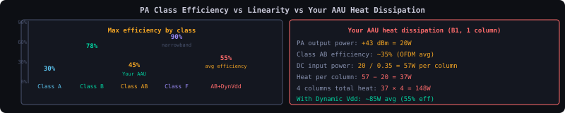
A car engine converts fuel to motion — but only about 25-40% of the fuel becomes actual motion; the rest is heat from the exhaust and engine block. Your PA does the same with electricity. Class A is like leaving the engine running at full throttle all the time (very inefficient). Class AB is like a well-tuned engine that only works as hard as needed. Dynamic Vdd is like a hybrid car — it reduces fuel use at low speeds (low signal levels) automatically. 148W of heat from 4 PA columns is why your AAU needs active cooling and why high ambient temperature causes power derating.
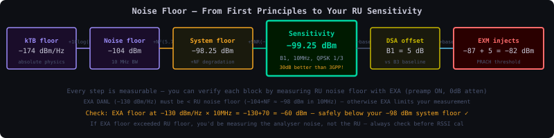
| Temperature | Kelvin | Thermal noise density | Change from room temp |
|---|---|---|---|
| −40°C (cold outdoor) | 233 K | −175.6 dBm/Hz | −1.6 dB (quieter) |
| +17°C (room, 290K) | 290 K | −174.0 dBm/Hz | reference |
| +55°C (hot outdoor) | 328 K | −173.0 dBm/Hz | +1.0 dB (noisier) |
| +85°C (PA junction) | 358 K | −172.5 dBm/Hz | +1.5 dB (noisier) |
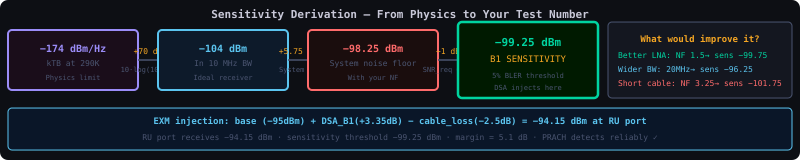
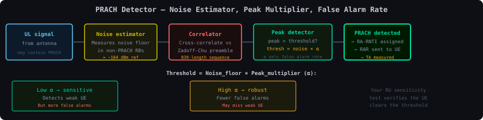
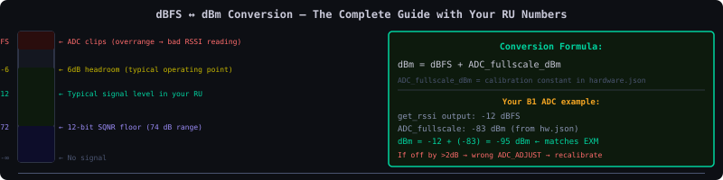
| dBm | dBFS | |
|---|---|---|
| What it measures | Absolute RF power at a physical port | Digital amplitude relative to ADC max |
| Reference point | 1 mW into 50Ω at the connector | ADC full-scale output (maximum code) |
| Range | Any value (positive or negative) | Always ≤ 0 dBFS (0 = clipping) |
| Where measured | At RF port, after all the hardware | In the digital domain, after ADC |
| Used in | Link budget, test results, 3GPP specs | power_monitor, get_rssi raw output |
| Reading | dBFS value | What it means | Action |
|---|---|---|---|
| DL power_monitor | −21 dBFS | Normal load, good headroom | OK — continue |
| DL power_monitor | > −8 dBFS | Near ADC clipping | Reduce DL power or check CFR |
| UL get_rssi | −44.9 dBFS | At sensitivity test point for B1 | This is your REFSENS measurement point |
| UL get_rssi | −68 dBFS or worse | At or below ADC noise floor | Signal too weak — cannot measure reliably |
| UL get_rssi | −5 dBFS or better | Strong signal, ADC nearly full | Check for overload — reduce VGA gain |
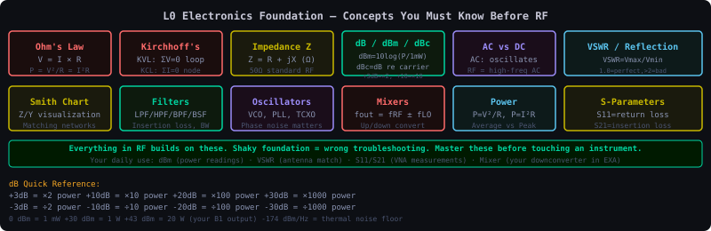
| Formula | Linear | dB | RF Example |
|---|---|---|---|
| Power | P = V²/R = I²R | P_dBm = 10log₁₀(P_mW) | B1 TX: 43dBm = 20W at antenna |
| Gain | G = P_out/P_in | G_dB = 10log₁₀(G) | LNA: G=100 linear = 20dB |
| Voltage | V = IR | V_dBV = 20log₁₀(V) | 50Ω at 0dBm: V = 0.224V RMS |
| Impedance | Z = V/I | — | RF always 50Ω. Mismatch → VSWR |
| Capacitor | Xc = 1/(2πfC) | — | 1nF at 2GHz: Xc = 0.08Ω (short!) |
| Inductor | XL = 2πfL | — | 1nH at 2GHz: XL = 12.6Ω (open!) |
| Resonance | f₀=1/(2π√LC) | — | Filter center frequency design |
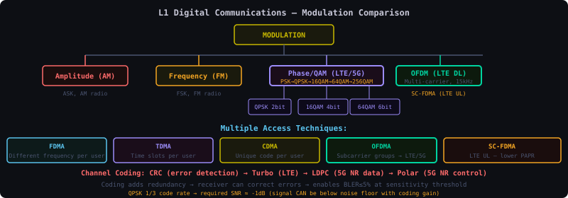
| Modulation | Bits/symbol | Min distance | EVM limit (3GPP) | Your test ETM |
|---|---|---|---|---|
| QPSK | 2 | 0.707 (normalized) | ≤17.5% | ETM 1.1, 3.3 |
| 16QAM | 4 | 0.316 | ≤12.5% | ETM 3.2 |
| 64QAM | 6 | 0.155 | ≤8.0% | ETM 3.1, 3.1a |
| 256QAM | 8 | 0.076 | ≤3.5% | ETM 2a, 3.1a (PW internal) |
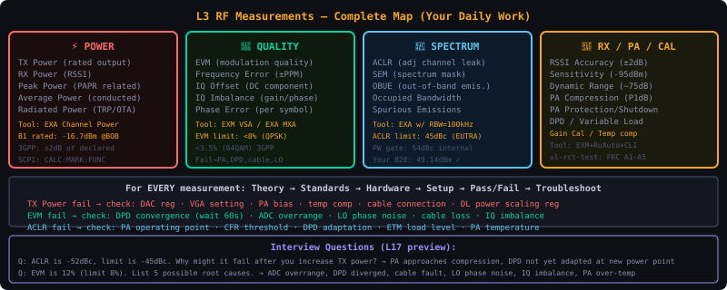
| Measurement | EXA Mode | Key Settings | Pass Criteria |
|---|---|---|---|
| Channel Power | LTE-FDD CHP | BW=channel BW, Avg=10 | ±1.5dB from P_rated |
| ACLR | LTE-FDD ACP | Offset=5/10MHz, RBW=30kHz | ≥45dB(COMBA) / ≥55dB(Metro) |
| EVM | LTE-FDD EVM | ETM auto, subframes=10 | ≤3.5%(Metro) / per-ETM(COMBA) |
| Frequency Error | LTE-FDD EVM | Read freq error field | ±0.05ppm |
| TAE | LTE-FDD MIMO | 4-port simultaneous | ≤65ns(Metro) / ≤90ns(FHGW) |
| Sensitivity | EXM SG inject | BLER threshold 5% | per band DSA formula |
| PRACH | EXM SG inject | ZC sequence waveform file | per band base_dbm+DSA |
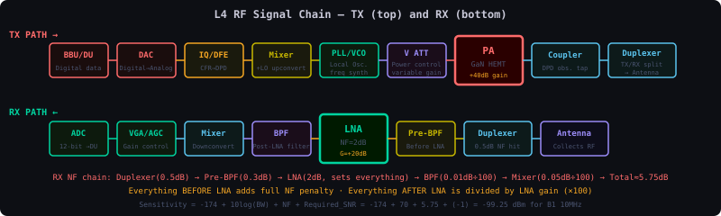
| Block | Function | Failure mode | What you measure |
|---|---|---|---|
| DAC | Digital→Analog: converts IQ samples to analog RF | Quantization noise, linearity errors | EVM, phase noise |
| CFR | Clip peaks to reduce PAPR (keeps PA from overdriving) | Too aggressive → EVM degrades. Too loose → PA clips | PAPR reading, EVM |
| DPD | Pre-distort signal to cancel PA non-linearity | Not converged → ACLR fails. Wrong model → worse than no DPD | ACLR, EVM |
| PA | Amplify to transmit power level | Compression → EVM. Damage → no output. Bias drift → power variation | Channel power, ACLR |
| Duplexer | Separate TX and RX on same antenna port | Insertion loss degrades power. Poor isolation → TX noise in RX | Port isolation, S21 |
| LNA | Amplify weak RX signal with minimum added noise | Compression → BLER. Damage → sensitivity loss of 20dB | NF, IP3, gain |
| ADC | Analog→Digital: converts RX analog to IQ samples | Clipping → BLER. Quantization noise → sensitivity loss | RSSI, sensitivity |
| AGC | Adjust gain to keep signal in ADC range | Not responding → ADC clips at high power | RSSI, dynamic range |
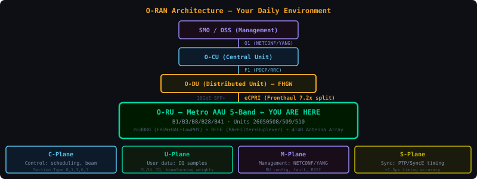
| O-RAN Feature | What it does | How you test it | Pass criterion |
|---|---|---|---|
| RU Capabilities | Reports supported bands, power, BW, features | NETCONF get-capabilities | All capabilities declared match hardware |
| Tilt | Electrical beam tilt via phase progression | VNA phase measurement per element | Phase matches θ=arcsin(λΔφ/2πd) |
| RET | Remote Electrical Tilt — tilt from SMO | NETCONF set tilt-deg, verify beam | ±1° accuracy |
| RSSI Accuracy | RU reports accurate received power | EXM inject → compare get_rssi vs DU | ±2 dB all sources agree |
| IQ Playback | Inject pre-recorded waveform into DAC | iq_playback cmd → EXA measures TX | ACLR/EVM pass without DU |
| IQ Recording | Capture ADC samples to file | iq_record → analyse offline | Correct IQ captured |
| Variable Load DPD | ACLR maintained across all traffic loads | ETM1-5 with RuAuto | ACLR >45dBc at all loads |
| uSleep | PA sleeps on empty symbols | test_Tx_uSleep — EVM on symbol 0 | EVM passes on first symbol after wake |
| Carrier Activation | Enable/disable carrier via NETCONF | activate/deactivate NETCONF call | TX starts/stops <100ms |
| Plane | Content | Protocol | Tool |
|---|---|---|---|
| M-plane | Config/alarms/FW | NETCONF/YANG TCP:830 | netopeer2-cli |
| C-plane | Scheduling: which RBs/beams | eCPRI Msg Type 2 | OAM counters |
| U-plane | IQ samples — the actual signal | eCPRI Msg Type 1 | EXA measures this |
| S-plane | PTP sync packets | IEEE 1588 over Ethernet | ptp4l logs |
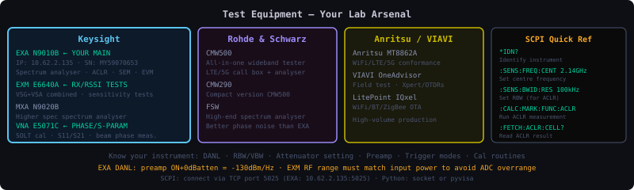
| Spec | Value | Relevance |
|---|---|---|
| Range | 10Hz–26.5GHz | Covers all your bands with headroom |
| Phase noise | −115 dBc/Hz @10kHz | Enough for 64QAM EVM measurements |
| DANL | −163 dBm/Hz (preamp on) | 27dB margin below your sensitivity spec |
| Max input | +30 dBm | Never exceed — attenuate high-power TX |
:FREQ:CENT 1842.5e6 # B3 RX frequency
:POW:LEV -73 # inject at sensitivity limit
:OUTP:STATE ON
:TRIG:SOUR EXT # sync to BBU frame
:TRIG:DEL 9.9765e-3 # B41 TDD slot delay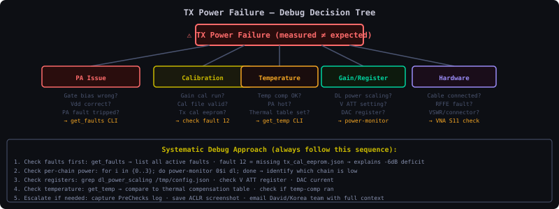
| Topic | Key Question | Expert Answer |
|---|---|---|
| ACLR | ACLR is -42dBc, limit -45dBc. Why? What do you do? | Check: DPD not adapted (wait 60s) · PA near compression (reduce power slightly) · CFR threshold too low · wrong RBW setting · ETM load too high |
| EVM | EVM is 12%, limit 8%. List root causes. | ADC overrange · DPD diverged · cable fault/VSWR · LO phase noise · IQ gain/phase imbalance · PA over-temp · wrong CFR setting |
| RSSI Accuracy | get_rssi reads -90dBm, EXM says -87dBm. Diff = 3dB. Why? | ADC_ADJUST offset wrong in hardware.json · cable loss not subtracted · temperature drift · wrong ADC channel mapped |
| PA Protection | PA tripped. How do you recover? | get_faults → identify trigger type · clear fault (reset Vgg) · check if condition gone · wait for DPD re-adapt 60s · re-measure ACLR · if repeating = hardware fault |
| Sensitivity | Why does sensitivity differ per band? | LNA NF varies with frequency (lower freq = lower NF) · Duplexer loss differs · T/R switch adds loss (TDD) · same kTB but different system NF per band → different DSA offset |
| DPD | DPD is enabled but ACLR still fails. Why? | DPD not yet converged (wait 60s) · PA temperature changed since last adapt · wrong operating power point · observation receiver fault · DPD gain coefficients diverged |
| S-parameters | S11=-6dB. What does this mean? Is it good? | S11=-6dB = 25% reflected power, VSWR≈3:1. NOT good for RF port. Good match needs S11 below -20dB (1% reflected). Root cause: impedance mismatch at antenna connector or damaged cable. |
| Smith Chart | Load point is at right edge of Smith Chart. What is it? | Right edge = pure resistance, no reactance. If at rightmost point (R=∞) = open circuit, Γ=+1, VSWR=∞. For matching network design, you navigate Smith Chart with L/C/transmission line segments to reach centre (50Ω). |
| uSleep | uSleep test fails — EVM spike on symbol 0. Root cause? | PA bias (Vgg) ramp-up is too slow. Bias not settled by start of first active symbol. Check RENESAS bias controller timing registers. Should be settled within <5μs before symbol start. |
| Beamforming | B1 ACLR passes per-column but fails combined. Why? | Cross-column phase alignment issue. When columns combine, their signals add coherently in main lobe direction but intermodulation products from slight phase mismatch create spectral regrowth. Check IQ calibration per column, verify DPD observation covers all columns. |
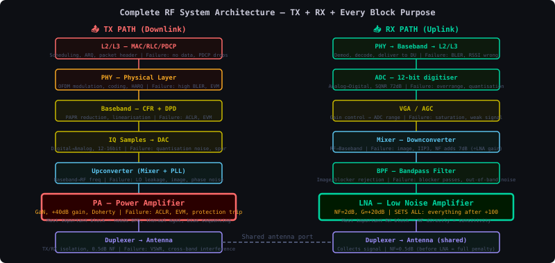
| Stage | Component | Level | Key number |
|---|---|---|---|
| BBU | PDCP→MAC→PHY | Digital | LDPC encoded IQ samples |
| eCPRI | BFP compressed IQ | ~150 Mbps/carrier | 9+4 BFP format |
| DAC | D→A | ~0 dBm | 200 MSPS |
| CFR | Peak clip | PAPR 8.3±1dB | Reg 0x534020004=0xd7 |
| DPD | Pre-distort | ~0 dBm | Reg 0x534020008=0x020b |
| PA | Amplify | −16.7→+37dBm (B1) | 53dB gain |
| BOB SMA | Test point | −16.7 dBm (B1) | YOUR measurement point |
| Antenna | Radiate | ~+36.5 dBm | After duplexer −0.5dB |
| Test | Measures | Point in chain |
|---|---|---|
| Channel Power | PA output level | BOB SMA (pre-PA level) |
| ACLR | DPD+PA linearity | BOB SMA spectrum |
| EVM | Total TX distortion | BOB SMA constellation |
| Sensitivity | Full RX chain | Antenna port → BBU decision |
| PRACH | RX + MAC timing | Air → MAC RA detection |
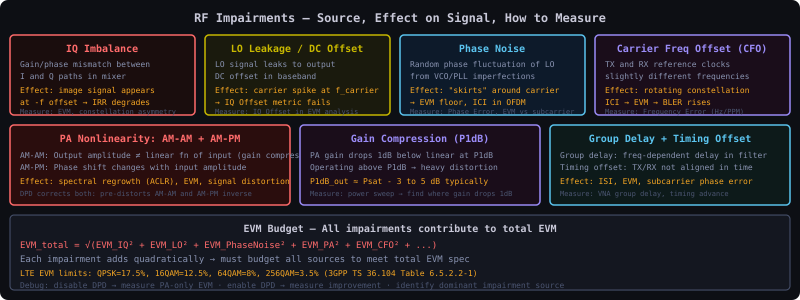
| Impairment | Constellation signature | Root cause | Fix |
|---|---|---|---|
| IQ imbalance | Mirror ghosts | ADC/DAC gain/phase mismatch | IQ calibration |
| LO leakage | Offset cluster | Mixer LO feedthrough | DC offset cal |
| Phase noise | Circular smear | PLL bandwidth/jitter | Better TCXO |
| CFR clipping | Compressed outer ring | CFR threshold too low | Adjust 0xd7 |
| AM-AM distortion | Inward compression | PA saturation | DPD |
| Frequency offset | Rotating constellation | Ref clock drift | GPS/TCXO sync |
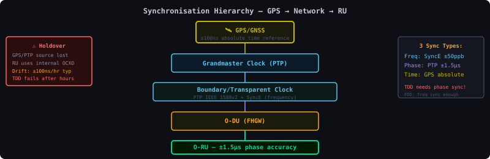
| Level | Requirement | If wrong | Your test |
|---|---|---|---|
| Frequency | ±0.05 ppm | Carrier error → EVM fails | Frequency error RCT |
| Phase | ±1.5 μs (TDD) | TX/RX collision, HO fails | TAE test, PTP status |
| Time | ±1.5 μs (5G NR abs) | 5G positioning fails | PTP grandmaster |
# Good: SLAVE with offset < 1500ns
ptp4l[12345]: SLAVE master offset -5 s2 freq +234 path delay 1234
# Bad: FAULTY = lost sync
ptp4l[12345]: FAULTY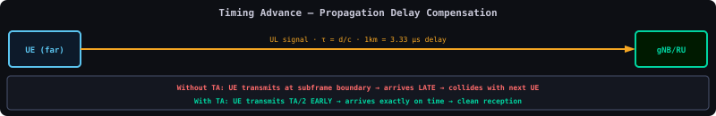
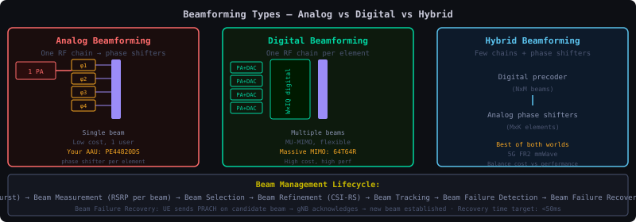
| Type | Phase shift where | Beams | Your hardware |
|---|---|---|---|
| Analog | RF phase shifters | One beam/panel | Older TDD |
| Digital | Baseband precoding | Any direction, fully flexible | Your Metro 4T4R |
| Hybrid | Both baseband+RF | Multi-beam per sub-array | Massive MIMO 64T64R |
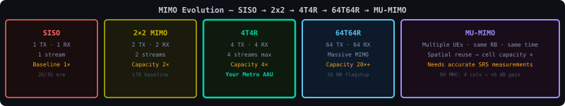
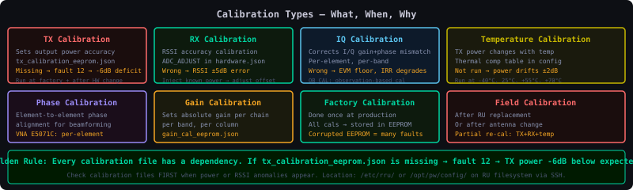
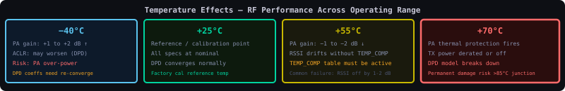
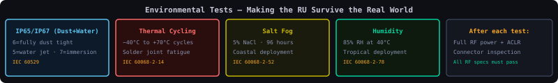
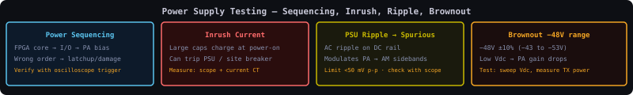
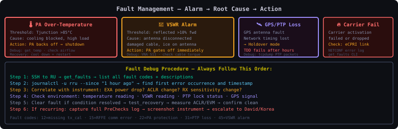
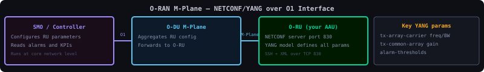
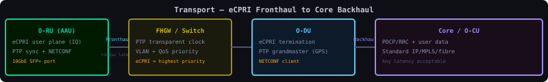
| Plane | eCPRI msg type | Content | Rate (20MHz LTE) |
|---|---|---|---|
| U-plane | Type 0 | IQ samples (BFP 9+4) | ~150 Mbps/carrier |
| C-plane | Type 2 | Section descriptors: which RBs, beam index, timing | ~1 Mbps |
| M-plane | TCP (not eCPRI) | NETCONF/YANG config | <1 Mbps |
| S-plane | PTP (not eCPRI) | IEEE 1588 sync packets | <0.1 Mbps |
| Requirement | Value |
|---|---|
| Latency | <100μs one-way |
| Jitter | <5μs |
| PTP | Hardware timestamping |
| QoS | S>C>U>M priority |
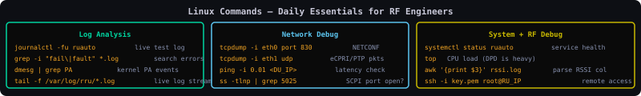
journalctl -fu ruauto: live follow ruauto test logs. grep -i "fault|error|fail" /var/log/rru/*.log | tail -50: find recent errors. tcpdump -i eth0 -n udp dst port 319: capture PTP packets. cat /sys/class/hwmon/hwmon0/temp1_input: read PA temperature directly. awk -F"," "NR>1{sum+=$3;count++} END{print sum/count}" rssi_results.csv: compute average RSSI from results.# SSH to RU
ssh oranuser@192.168.1.1
# Monitor logs
tail -f /var/log/syslog | grep -i 'error\|fault'
# Check DPD
dpd-app-orx --debug | grep -E 'ALIGN|POWER'
# eCPRI packet rate
tcpdump -i ecpri0 -n 'ether proto 0xAEFE' -c 100
# PTP status
cat /var/run/ptp4l.log | tail -5
# Check carrier state via NETCONF
netopeer2-cli -u oranuser -p oranpw -h 192.168.1.1 \
--get-config /o-ran-uplane-conf:user-plane-configuration# ALWAYS backup before editing
cp tc_cadence.json tc_cadence.json.bak
# Find config files
find / -name 'tc_cadence.json' 2>/dev/null
find / -name 'rfdc.txt' 2>/dev/null
# Check DSA register
grep 'DSA_B1' /opt/pw/config/rfdc.txt
# Log analysis: ACLR values
grep 'ACLR' rct_results.log | awk '{print $3, $5}'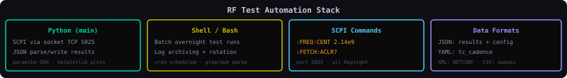
import socket, time
class Instr:
def __init__(self,ip): self.s=socket.socket(); self.s.connect((ip,5025))
def send(self,c): self.s.send((c+chr(10)).encode())
def query(self,c): self.send(c); return self.s.recv(4096).decode().strip()
exa=Instr("10.62.2.135")
exa.send(":FREQ:CENT 2.14e9")
aclr=float(exa.query(":FETCH:ACLR?"))
print("PASS" if aclr<-45 else "FAIL", aclr)import json
with open("rct_results.json") as f: r=json.load(f)
fails=[t for t in r["tests"] if t["result"]=="FAIL"]
for f in fails: print(f['group']+"/"+f['test']+": "+str(f['measured']))import socket, time
def scpi(s, cmd, q=False):
s.sendall((cmd+'\n').encode())
return s.recv(4096).decode().strip() if q else None
sock = socket.socket()
sock.connect(('10.62.2.135', 5025)) # EXA IP
scpi(sock, ':INST:SEL LTE')
scpi(sock, ':FREQ:CENT 1842.5e6') # B3
scpi(sock, ':INIT:IMM')
time.sleep(2)
result = scpi(sock, ':FETCH:ACH?', q=True)
print(f'ACLR: {result}') # lower_adj, upper_adj in dBc
sock.close()import json
with open('tc_cadence.json') as f:
cfg = json.load(f)
for grp in cfg['test_groups']:
for test in grp.get('tests',[]):
kpi = test.get('kpi_limits',{})
print(f"{test['test_id']}: ACLR_min={kpi.get('ACLR_min','N/A')}")o-ran-antenna-calibration) re-aligns per-column phase in-situ for beamforming.| Measurement | Use This | Key Settings | Common Mistake |
|---|---|---|---|
| TX Power | EXA | Atten 20dB · Preamp OFF · 30dB pad | Preamp ON → input compression → wrong reading |
| ACLR | EXA | LTE ACLR mode · wait 60s DPD · RBW 100kHz | Measuring before DPD convergence → false fail |
| EVM | EXA (VSA mode) | Demodulation mode · correct FRC · IFBW matters | Wrong IFBW makes EVM look worse than reality |
| RSSI injection | EXM | FRC waveform · correct UL freq · verify with EXA first | Injecting without verifying EXM output ±0.5dB |
| Cable loss | VNA | S21 · SOLT cal first · measure at band centre freq | Skipping SOLT cal → cable + connector loss included |
| Phase cal | VNA | S21 phase · IFBW 1kHz · single freq · 30min warmup | Moving cables after SOLT cal → phase measurement wrong |
| VSWR check | VNA | S11 · 1-port cal · check all connectors | Not checking S11 after connecting → missing bad connector |
| PSU ripple | Oscilloscope | AC couple · 50mV/div · 1MHz BW · check PA rail | DC coupling masks small AC ripple → miss the problem |
| Noise figure | EXA (NF mode) | Noise source ENR · preamp ON · cold/hot method | Not entering correct ENR table → NF reads wrong |
The baseline loss just from distance + frequency · explains why B28/B8 give coverage and B41 gives capacity
FSPL(dB) = 20·log10(d) + 20·log10(f) + 32.44 (d in km, f in MHz)
B1 @ 1 km: 20log(1) + 20log(2140) + 32.44 = 0 + 66.6 + 32.44 = 99 dB
B28 @ 1 km: 20log(1) + 20log(758) + 32.44 = 0 + 57.6 + 32.44 = 90 dB
=> B28 sees ~9 dB LESS path loss than B1 at the same range| Band | Freq (MHz) | FSPL @1 km | Role |
|---|---|---|---|
| B28 | 758 | ~90 dB | deep coverage |
| B8 | 942.5 | ~92 dB | coverage |
| B3 | 1842.5 | ~98 dB | capacity/coverage |
| B1 | 2140 | ~99 dB | capacity |
| B41 | 2545 | ~101 dB | capacity (TDD) |
total loss = FSPL + shadow-fade margin + building penetration + body loss (see PROP04).Two time-scales of signal variation — and the 3GPP channel models (EPA/EVA/ETU) you'd use to reproduce them
| Model | Delay spread | Use |
|---|---|---|
| EPA | ~43 ns | Extended Pedestrian A — mild |
| EVA | ~357 ns | Extended Vehicular A — moderate |
| ETU | ~5 µs | Extended Typical Urban — worst case |
Movement shifts frequency; too much Doppler breaks OFDM subcarrier orthogonality (ICI)
fd = (v/c) · f_carrier · cos(θ) v in m/s, c = 3×10^8 m/s
120 km/h on B1 (2140 MHz): (33.33 / 3e8) · 2140e6 = 238 Hz
120 km/h on B28 (758 MHz): (33.33 / 3e8) · 758e6 = 84 Hz
=> lower band = less Doppler at the same speed| SCS | ~ICI limit (SCS/10) | Safe up to |
|---|---|---|
| LTE 15 kHz | ~1500 Hz | ~120 km/h on all bands (comfortably) |
| NR 30 kHz | ~3000 Hz | ~250 km/h |
Add up every gain and loss from PA to UE decoder — the number that decides "does it work at this range?"
TX side
PA output power +37.0 dBm
Duplexer loss -0.5 dB
Antenna gain +15.0 dBi (4T4R beamforming)
---------------------------------
EIRP +51.5 dBm
Path
FSPL @ 500 m (B1) -93.0 dB
Shadow-fade margin -8.0 dB
Building penetration -20.0 dB (indoor)
Body loss -3.0 dB
---------------------------------
RX power at UE 51.5 -93 -8 -20 -3 = -72.5 dBm
RX side (UE)
UE noise figure 7 dB
Required SNR (QPSK) -1 dB
UE sensitivity -174 +10log(10MHz) +7 +(-1) = -98 dBm
---------------------------------
MARGIN -72.5 - (-98) = +25.5 dB -> solid coverage (QPSK)
64QAM case
Required SNR +18 dB
UE sensitivity -79 dBm
MARGIN -72.5 - (-79) = +6.5 dB -> marginal indoors| Video | Title | Core lesson | Module connection |
|---|---|---|---|
| aQd_zBytid8 | Interpreting Constellation Diagrams | How to diagnose signal impairments (phase noise, IQ imbalance, PA compression, DC offset) from the IQ scatter plot on your EXM | M05, VID1 above |
| 1xGncBvWv6U | Understanding Spectrum Analyzers — ACLR | Complete ACLR measurement setup: RBW, cable loss, gating, reading dBc, what causes ACLR to fail | M07, VID2 above |
| rMVAQsUudSs | Understanding Spectrum Analyzers | FFT, RBW, VBW, dynamic range, DANL, noise floor — the fundamentals of how your EXA/EXM work | M07, VID3 above |
| swjgr4YBhRM | RF Signal Chain Topics | Signal chain overview, IQ architecture, mixer theory, noise figure — connects theory to your daily hardware | M03, M16, VID4 above |
| # | Channel | Link | Start with |
|---|---|---|---|
| 1 | ⭐ Keysight Labs | @KeysightLabs | RF Back to Basics playlist → Spectrum Analysis Fundamentals |
| 2 | ⭐ Rohde & Schwarz | @RohdeSchwarz | Spectrum Analyzer Basics → ACLR → EVM → LTE → 5G NR |
| 3 | ⭐ The Signal Path | @TheSignalPath | Mixers → PLL → ADC → Spectrum Analyzer teardowns |
| 4 | ⭐ Analog Devices | @AnalogDevices | ADC/DAC fundamentals → IQ Signals → RF Front Ends |
| 5 | ⭐ Amarisoft | @Amarisoft | LTE PHY → 5G PHY → PRACH → PUSCH/PDSCH → DMRS |
| 6 | ⭐ MathWorks | @MathWorks | OFDM simulation → LTE/5G Toolbox → Beamforming → MIMO |
| 7 | Texas Instruments | @TexasInstruments | RF Basics Getting Started (31 min) → TI Precision Labs ADC/DAC |
| 8 | Neso Academy | @NESOAcademy | Digital Communication → FFT → Sampling → Nyquist |
| 9 | All About Electronics | @AllAboutElectronics | ADC → DAC → PLL → Filters → OFDM → DSP |
| 10 | Wireless Future | @WirelessFuture | LTE/5G architecture → MAC/RLC → RRC → call flows |
| 11 | TelecomHall | @TelecomHall | LTE/5G KPI → optimization → RAN architecture |
| 12 | National Instruments | @NIglobal | SDR → RF Testing → Signal Processing |
| 13 | free5GC | @free5GC | 5G Core → PDU Session → NGAP → GTP |
| 14 | NPTEL | @nptel | RF Systems playlist → Microwave Engineering → DSP |
| 15 | W2AEW | @w2aew | VNA use → S-parameters → Smith charts → oscilloscopes |
| Week | Focus | Channel/Resource | Self-check from this file |
|---|---|---|---|
| 1 | dB, dBm, link budget, noise floor −174 dBm/Hz | Keysight RF Back to Basics | M01, EXP4 |
| 2 | LNA, PA classes, Doherty, VSWR, S-params | Keysight + The Signal Path | M02, M03, EXP3 |
| 3 | PLL, LO, IQ, ADC/DAC, dBFS↔dBm | Analog Devices + TI | EXP1, EXP6, VID4 |
| 4 | FFT, OFDM, sampling, spectrum analyzer RBW/VBW | Neso + All About Electronics | M05, VID2, VID3 |
| 5 | Constellation diagrams, EVM, IQ impairment diagnosis | Watch aQd_zBytid8 | VID1, EXP2 |
| 6 | ACLR, SEM, DPD, CFR — full Tx chain | Watch 1xGncBvWv6U + R&S ACLR | M06, M07, VID2 |
| 7 | LTE PHY — resource grid, PDSCH, PRACH, PUCCH | Amarisoft YouTube | M08, EXP5 |
| 8 | 5G NR, TDD, beamforming, massive MIMO | Amarisoft + MathWorks | M09, M16-TDD |
| 9 | RSSI calibration, ADC dynamic range, dBFS | Watch rMVAQsUudSs + David call | M14, M16b, EXP6 |
| 10 | O-RAN, eCPRI, FHGW, RuAuto framework | O-RAN Alliance videos | M15, RuAuto card |
| 11 | Instruments deep dive — EXA/EXM/VNA all buttons | R&S + Keysight | Instruments section |
| 12 | Review weak areas — redo all self-checks | All modules above | All M01–M16 self-checks |